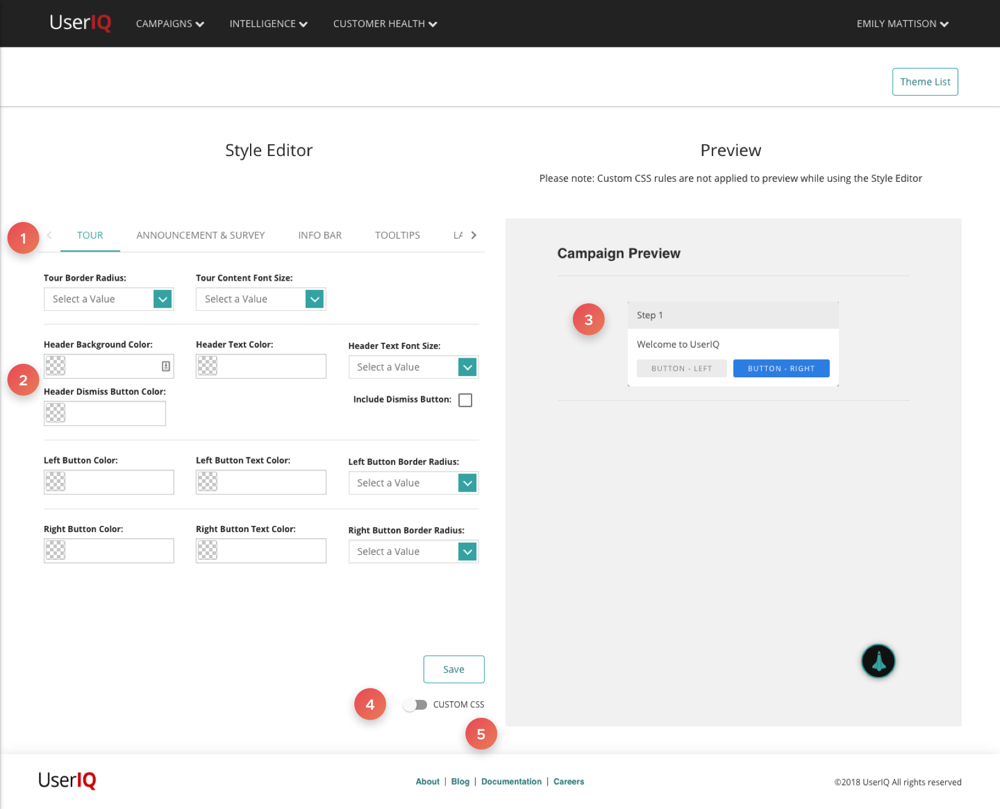
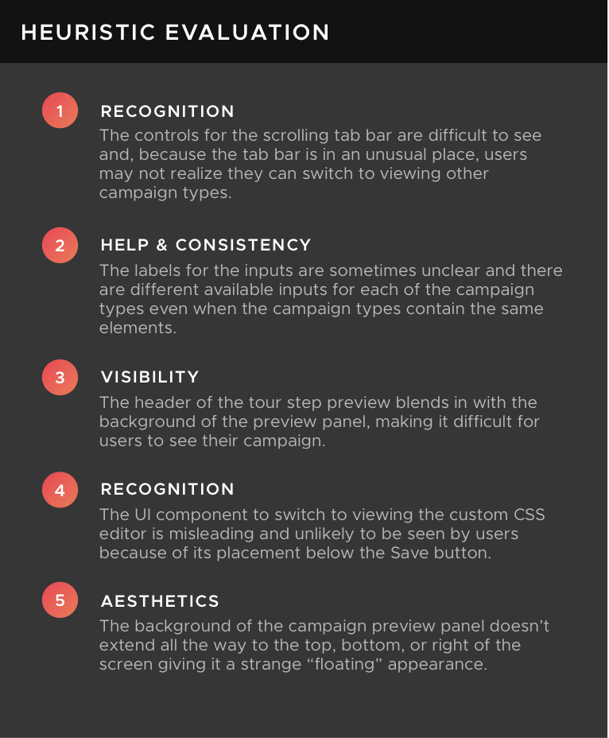
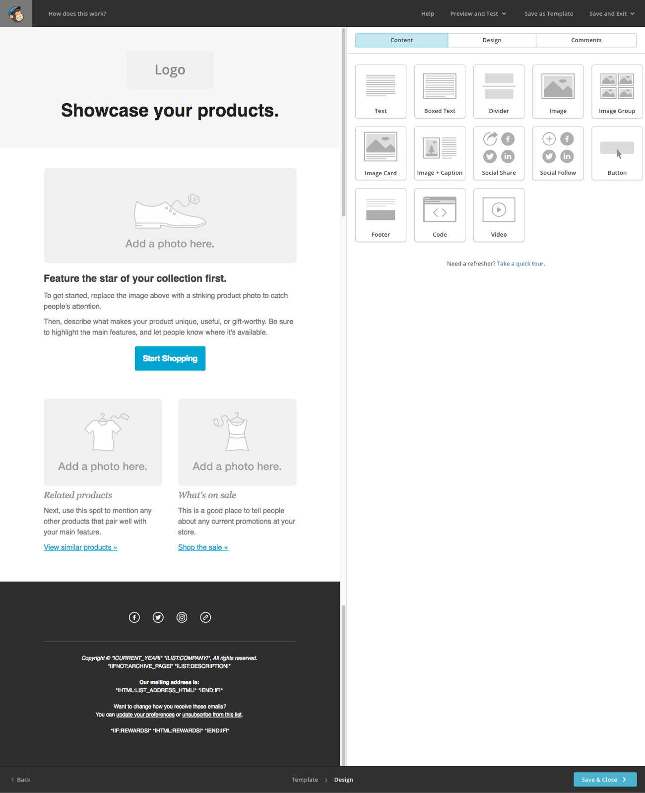
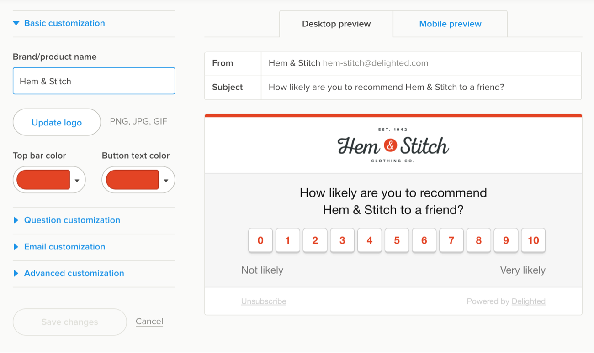
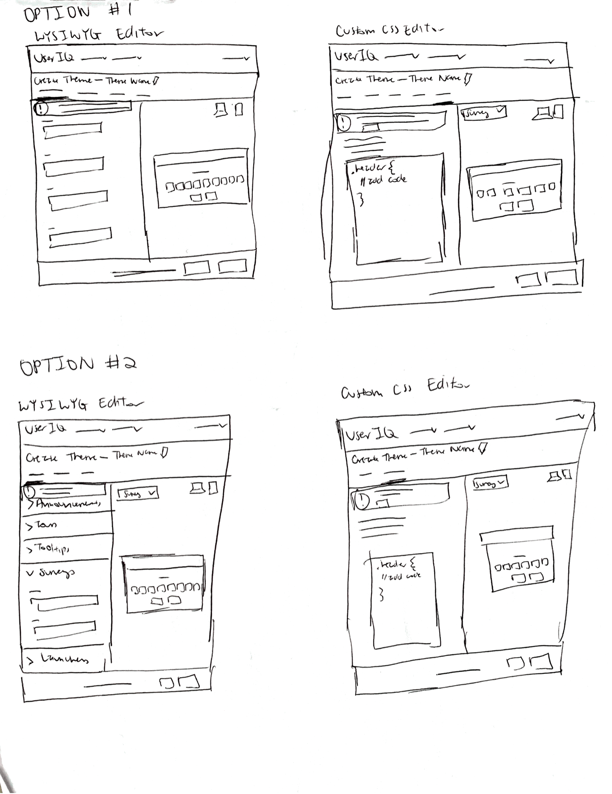
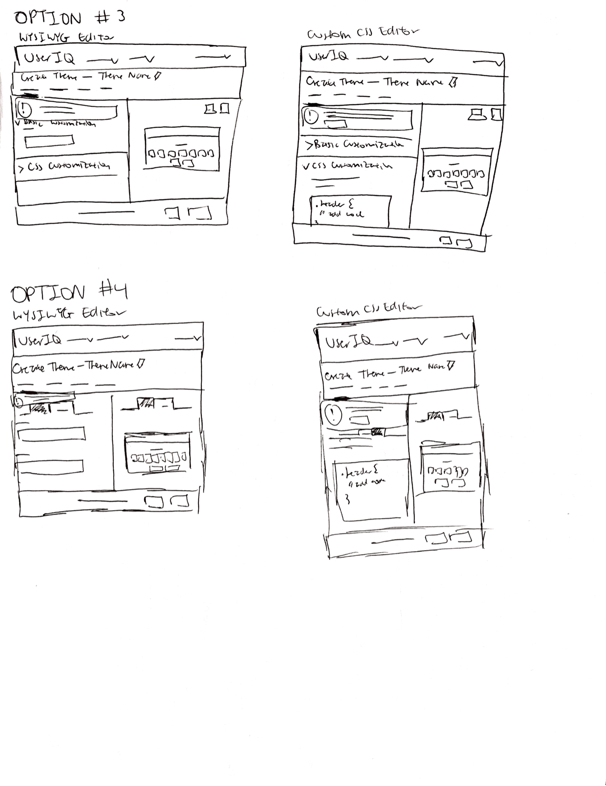

Recreating the process for creating in-app engagements
RoleUX Designer
Background
The most popular feature with the least popular workflow
As an early-stage startup that was still in the process of staking out its position within the product management and customer success space, my former company UserIQ initially focused on developing three widely different feature sets in an effort to satisfy the largest number of new and existing users. The most popular and reliable of these three feature sets were in-app engagements—pop-up announcements, guided tours, surveys, and info bars—that other SaaS companies could use within their products to present information to or gather feedback from their users.
An example of a UserIQ NPS Survey on a customer's site.
Despite its popularity, however, creating a “campaign” was an enormous headache for our customers partly because they were unable to style their campaigns while creating them. To make their campaigns appear the way they wanted them to, they first had to go to a separate part of the app and create a theme that included styles for all campaign types before they could go back and apply that theme to the campaign they were trying to create. To make matters worse, the convoluted arrangement of theme options within this separate Create Theme flow meant that users were having trouble fulfilling the basic tasks of creating a theme.
We are working on our Campaign Themes and having trouble editing the font [and] border color for buttons.”
—UserIQ customer in a Zendesk ticket to our CS team
It was obvious that both the Create Campaign and Create Theme flows needed attention and, because dealing with theme-related issues was consuming a significant amount of our customer success team’s time, redesigning the Create Theme flow became one of my first assignments as a new UX hire at UserIQ.
Process
Creating a more intuitive flow based on patterns our customers were already familiar with
Defining the Problem & Research
In order for me to better understand the problem, JD spent some time at the beginning of the project pointing out to me what he knew were the biggest issues within the Create Theme flow based on feedback he had received from the CS team. Two of the things that stood out were the scrolling tab bar at the top of the “Edit" panel that allowed the user to switch to the inputs and preview for a different campaign type as well as the placement of the custom CSS editor, which was currently hidden behind a misleading toggle below the save button.
Existing Create Theme Flow


After getting a better sense of what was needed from my discussions with JD, I began to look at other apps with flows that seemed similar to UserIQ’s Create Theme flow and which our customers may have used before. MailChimp and Delighted provided good examples of how a few simple UI components, such as button groups, accordions, and a stepper, could be used to better organize this type of design wizard.


Screenshots of MailChimp’s “Design Email” flow (left) and Delighted’s “Customize Appearance” flow (right).
Sketches
Once I began sketching as many viable solutions to the problem that I could think of, I realized that the biggest challenge to redesigning the Create Theme flow was going to be figuring out the best way for users to switch to a variety of different views on the same screen. They needed to be able to:
Switch between the WYSIWYG inputs for different campaign types within the “Edit” panel
Switch between the WYSIWYG inputs and custom CSS editor that advanced users were using within the “Edit” panel
Switch between desktop and mobile previews within the “Preview” panel and, in some cases:
Switch between different campaign type previews within the “Preview” panel
One of the other challenges that I realized we needed to solve for was the random assortment of WYSIWYG inputs for each campaign type. The layout of inputs was disorganized with inputs for elements that would appear in the footer of the campaign being displayed above inputs for elements that would appear in the header. What’s more, users had the ability to change the styles for elements that were in multiple campaign types only on certain campaign types. It was obvious that we needed to determine a universal set of available WYSIWYG inputs with consistent naming conventions for all campaign types, but also include WYSIWYG inputs for elements that were unique to particular campaign types.
The sketches that I initially put together reflected these two challenges and were inspired, in part, by MailChimp’s and Delighted’s creation flows.


A few of my early sketches for the new Create Theme flow.
Mockups, Prototypes, & User Testing
After thinking about the pros and cons for each of the sketches, I was able to narrow down the number of viable options to just two concepts, which I converted into mockups and later prototypes. The key difference between the two concepts was that one concept had an additional tab in the tab bar for “Theme CSS” that would allow the user to switch to viewing the custom CSS editor for all campaign types and the other had a button group within the “Edit” panel that would allow the user to switch between viewing the WYSIWYG inputs for that campaign type and the custom CSS editor, which still applied to all campaign types.